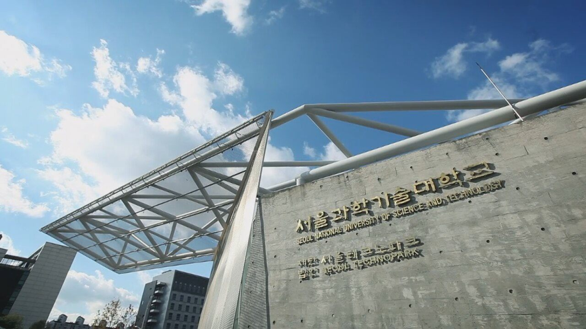

서울과학기술대학교(서울과기대)는 서울 노원구 공릉동에 있는 국립대학입니다. 서울 안에 자리한 국립 종합대학이라는 점이 이 대학의 가장 큰 특징입니다. 국립대를 생각하면 지방을 먼저 떠올리게 되는데, 이 대학은 집에서 통학이 가능한 수도권 학생에게 국립대 학비와 서울 소재라는 조건을 동시에 주는 드문 자리에 있습니다.
2027학년도 수시 원서접수는 2026년 9월 7일부터 11일까지로 이미 마감됐습니다. 그럼에도 정리해 두는 이유는, 이 대학의 전형 구조가 “수능 공부를 어디까지 할 것인가”라는 질문에 아주 선명한 답을 요구하기 때문입니다. 고1·고2 자녀를 두셨다면 이 지점부터 보시면 됩니다.
먼저 공개된 수치입니다.
- 전체 모집 인원 2,515명 중 수시가 1,747명(69.5%)입니다.
- 학생부교과 고교추천 502명, 학생부교과 기회균형(재직자) 168명입니다.
- 학생부종합은 학교생활우수자 496명, 창의융합인재 91명, 기회균형 관련 187명입니다.
- 논술우수자 162명, 조형대학 실기전형 73명입니다.
① 수시 69.5% — 이 비율이 뜻하는 것
열 자리 중 일곱 자리 가까이가 수시입니다. 수시 비중이 90%에 가까운 지방 사립대만큼 극단적이지는 않지만, 정시로 남겨 둔 자리가 세 자리 남짓이라는 점은 분명합니다.
그런데 이 대학에서 진짜로 봐야 할 것은 수시 비율이 아니라 수시 안쪽의 갈림길입니다. 같은 수시인데도 어떤 전형은 수능 성적을 요구하고, 어떤 전형은 전혀 요구하지 않습니다. 이 차이가 고2 겨울부터 고3 여름까지의 공부 계획을 통째로 바꿔 놓습니다. 아래에서 하나씩 보겠습니다.
② 고교추천 502명 — 교과 100%인데 수능최저가 붙습니다
수시에서 가장 큰 단일 전형입니다. 뽑는 방식은 아주 단순합니다. 학생부 교과 성적 100%로 한 번에 선발합니다. 면접도 서류평가도 없습니다. 내신 하나로 줄을 세운다는 뜻입니다.
그런데 여기에 조건이 하나 붙습니다. 수능최저학력기준이 전 계열에 적용됩니다. 기준은 국어·수학·영어·탐구(상위 1과목) 가운데 2개 영역 등급 합 7 이내입니다. 네 영역 중 잘 본 두 개를 골라 합이 7 이하가 되면 됩니다.
2개 영역 합 7이라는 숫자를 처음 보시는 학부모님은 “그 정도면 넉넉한 것 아니냐”고 하십니다. 산술적으로는 3등급과 4등급, 혹은 2등급과 5등급이면 충족됩니다. 다만 해마다 내신은 되는데 최저를 못 맞춰 떨어지는 학생이 나오는 것이 교과전형의 현실입니다. 내신 관리에만 집중하다 수능을 손에서 놓아 버린 경우입니다.
그래서 이 전형을 목표로 한다면 계획이 명확해집니다. 내신을 주력으로 하되, 수능은 두 과목만큼은 끝까지 놓지 않는다. 보통 영어와 탐구 한 과목을 안정적으로 만들어 두는 쪽이 현실적입니다. 또 하나 참고하실 점은, 이 전형의 고교별 추천 인원에 제한이 없다는 것입니다. 학교 안에서 추천장을 두고 경쟁할 필요는 없다는 뜻입니다.
③ 학종 587명 — 수능최저 없이 면접에서 갈립니다
학교생활우수자 496명과 창의융합인재 91명을 합쳐 587명입니다. 이 두 전형에는 수능최저학력기준이 적용되지 않습니다. 앞의 교과전형과 정반대입니다.
선발 방식은 두 전형 모두 단계별입니다.
- 1단계 — 서류평가 100%로 모집 인원의 3배수를 추립니다.
- 2단계 — 1단계 성적 70%에 면접 30%를 더해 최종 합격자를 정합니다.
평가 항목의 비중도 공개돼 있습니다. 서류평가는 학업역량 35%, 진로역량 45%, 공동체역량 20%이고, 면접은 학업역량 35%, 진로역량 40%, 공동체역량 25%입니다. 서류에서도 면접에서도 진로역량이 가장 무겁다는 점이 눈에 띕니다.
진로역량이란 결국 “가고 싶은 학과와 관련해 3년 동안 무엇을 했는가”입니다. 과목 선택, 세특에 남은 활동, 동아리, 독서가 한 방향을 가리키고 있는지를 봅니다. 고1 말 과목 선택이 여기서 값을 하게 됩니다. 반대로 활동이 학년마다 따로 노는 생활기록부는 분량이 많아도 점수가 잘 나오지 않습니다.
또 하나, 창의융합인재전형은 창의융합대학과 에너지바이오대학에서만 운영합니다. 모든 학과에 지원할 수 있는 전형이 아니니, 목표 학과가 이 두 단과대학에 속하는지 먼저 확인하셔야 합니다.
④ 논술 162명 — ST자유전공학부(자연) 하나로 모았습니다
논술우수자전형 162명은 ST자유전공학부(자연) 단일 모집단위에서만 뽑습니다. 학과별로 흩어 뽑지 않고 한곳에 모았다는 뜻입니다.
- 선발 방법은 논술 70% + 학생부 교과 30% 일괄 합산입니다.
- 수능최저학력기준이 없습니다.
- 시험 시간은 100분이고, 출제 범위는 수학Ⅰ·수학Ⅱ·미적분 중심입니다.
정리하면 수학 논술 한 과목입니다. 수능최저가 없으니 내신이 다소 아쉬워도 수학 실력만 있으면 승부를 볼 수 있는 구조이고, 그만큼 경쟁률이 높게 형성되는 것이 일반적인 논술전형의 특징입니다. 고2 자녀가 수학은 자신 있는데 국어·영어가 발목을 잡는 유형이라면 한 번쯤 고려해 볼 만한 자리입니다.
⑤ 2027학년도에 달라진 것들
- 양자융합물리학과 신설 — 18명을 뽑습니다. 고교추천 4명, 창의융합인재 9명, 농어촌학생 1명이 배정됐습니다.
- ST자유전공학부를 자연과 인문으로 나눴습니다. 인문 모집단위가 새로 생겼습니다. 1학년 2학기를 마친 뒤 학과를 고르는 구조입니다.
- 학생부 교과 반영 기준이 90단위 이상에서 80단위 이상으로 낮아졌습니다. 반영하는 과목 범위가 줄어든 셈이라, 이수 단위가 적은 학생에게는 유리하게 작용할 수 있습니다.
- 조형대학 실기전형 1단계 선발 배수가 10배수에서 8배수로 줄었습니다. 1단계 통과가 그만큼 좁아졌습니다.
- 전형별 인원도 조금씩 움직였습니다. 고교추천은 526명에서 502명으로 24명 줄었고, 학교생활우수자는 478명에서 496명으로 18명 늘었습니다. 창의융합인재는 85명에서 91명으로 늘고, 논술은 168명에서 162명으로 줄었습니다. 교과에서 종합으로 무게가 조금 옮겨 갔다고 읽으시면 됩니다.
- 8개 학과의 명칭이 바뀌었습니다. 예전 자료로 학과를 찾으실 때 이름이 달라 보일 수 있습니다.
참고로 지역인재 특별전형은 비수도권 대학에 적용되는 제도이므로, 서울에 있는 이 대학에는 해당 사항이 없습니다. 지방 거점국립대를 함께 보고 계신다면 그쪽 전형과 헷갈리지 않으셔야 합니다.
⑥ 지원 전 체크리스트
- 수능 두 과목을 끝까지 가져갈 수 있는가. 예라면 고교추천이, 아니라면 학종이나 논술이 맞습니다. 이 결정은 늦어도 고2 겨울에는 내려져야 합니다.
- 생활기록부가 한 방향을 가리키는가. 서류와 면접 모두 진로역량 비중이 가장 큽니다. 활동의 개수보다 연결이 중요합니다.
- 면접에서 30%가 뒤집힌다는 점을 계산에 넣었는가. 1단계를 3배수로 뽑으니, 서류에서 앞섰다고 끝나지 않습니다.
- 목표 학과가 창의융합대학·에너지바이오대학에 있는가. 창의융합인재전형은 이 두 곳에서만 운영합니다.
- 수학 하나로 승부를 볼 생각인가. 그렇다면 논술 ST자유전공학부(자연)가 선택지가 됩니다. 범위는 수학Ⅰ·수학Ⅱ·미적분입니다.
마무리하며
이 대학의 전형표를 한 줄로 줄이면 이렇습니다. 내신이 좋고 수능 두 과목을 지킬 수 있으면 교과, 생활기록부가 촘촘하고 수능이 부담되면 종합, 수학이 무기면 논술. 세 갈래가 이렇게 깨끗하게 나뉘는 대학은 많지 않습니다.
바꿔 말하면 어느 길로 갈지 정하지 않은 채 셋을 다 조금씩 준비하는 것이 가장 불리한 대학이기도 합니다. 고2 자녀를 두셨다면 겨울이 오기 전에 한 갈래를 고르고, 거기에 맞춰 남은 시간을 배분하시는 편이 좋습니다.
와와 학습코칭센터에서는 아이의 학년과 성적 흐름에 맞춰 목표 대학과 전형을 함께 정리해 드립니다. 교과로 갈지 종합으로 갈지부터 막막하시다면, 가까운 센터에서 상담을 신청해 보세요.
※ 본 글은 서울과학기술대학교 2027학년도 수시모집 관련 언론 보도와 공개된 입시 안내 내용을 바탕으로 정리했습니다. 인용한 모집 인원과 전형 변경 사항은 보도 시점에 발표된 내용입니다. 모집단위별 세부 모집 인원, 학생부 반영 교과와 등급 환산 방식, 진로선택과목 반영 방법, 면접의 형태와 시간 및 실시 일자, 창의융합인재전형의 모집 학과 전체 목록, 기회균형·농어촌 등 정원 외 전형의 지원 자격과 세부 요건, 조형대학 실기전형의 종목과 1단계 평가 방법, 명칭이 변경된 8개 학과의 변경 전후 이름, 합격자 발표 일정은 확인하지 못해 이 글에 담지 않았습니다. 확인되지 않은 숫자와 기준은 기재하지 않았습니다. 사진은 과거에 촬영된 것으로 현재 모습과 다를 수 있습니다. 세부 사항은 모집요강에서 확정되며 변경될 수 있으므로, 반드시 서울과학기술대학교 입학처의 2027학년도 수시모집요강 원문에서 본인 지원 모집단위 기준으로 최종 확인하시기 바랍니다.